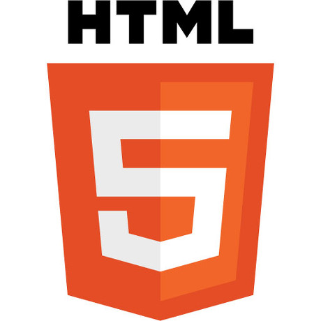
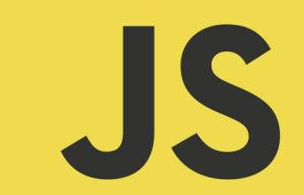

Emscripten and :
C++ in
the modern web
杨彦君 / Myblog
互联网+
通俗来说，“互联网+”就是“互联网+各个传统行业”，但这并不是简单的两者相加，而是利用信息通信技术以及互联网平台，让互联网与传统行业进行深度融合，创造新的发展生态。它代表一种新的社会形态，即充分发挥互联网在社会资源配置中的优化和集成作用，将互联网的创新成果深度融合于经济、社会各域之中，提升全社会的创新力和生产力，形成更广泛的以互联网为基础设施和实现工具的经济发展新形态。
工业4.0
“工业4.0”概念包含了由集中式控制向分散式增强型控制的基本模式转变，目标是建立一个高度灵活的个性化和数字化的产品与服务的生产模式。在这种模式中，传统的行业界限将消失，并会产生各种新的活动领域和合作形式。创造新价值的过程正在发生改变，产业链分工将被重组。
互联网
史上最大的 开放 平台
现代网站开发使用的工具 HTML, CSS, and JavaScript (JS)
|  |  |
No C++ :(
但是 所有主流的web浏览器都是 C++ 写的
原因很简单:
fast, familiar, library support
同样的, 人们希望使用 C++ 来开发web应用 , 也就是, 网站
现在有很多 非-通用的方法 (ActiveX, Flash/Alchemy, PNaCl/PPAPI)
web插件技术在采纳程度或者标准化程度上都是 失败的, 有很多 技术上 和 非技术上 的原因
插件技术本身也是 正在逐渐没落的 ( iPhone/iPad/家用游戏机等设备禁止安装浏览器插件 )
当然,这是个 好 兆头 - 标准的网站,就是在手机还是电脑上,都能正常运行
回到 C++的问题上
JavaScript 已经 完成标准化了, 所以,可以把C++ 编译成 javascript
事实上,很多语言已经这么做了:
- Java
- C#
- Python
- haXe
- TypeScript/CoffeeScript/liveScript
- etc.
C++ 编译成 JavaScript
传统C++代码
// hello.cpp
#include <iostream>
int main() {
std::cout << "hello, world!" << std::endl;
}
C++代码编译和运行过程
$ g++ hello.cpp -o a.out
$ ./a.out
hello, world!
使用Emscripten把c++编译成JavaScript :
$ em++ hello.cpp -o a.html
$ firefox a.html # or any other browser
你会得到这样的网页:
emcc, em++ 替换原有的C/C++编译器
开源的 C++ to JavaScript 编译器
C++ ⇒ LLVM ⇒ Emscripten ⇒ JavaScript
但是Emscripten只是能把c++编译成JavaScript :
我们只证明了C++有向javascript移植的能力:
并不足以证明,传统软件可以轻易的完成向web的移植
我的研究课题,就是给传统软件向web移植寻找一个可行的通用的方法
谢谢大家
欢迎提问